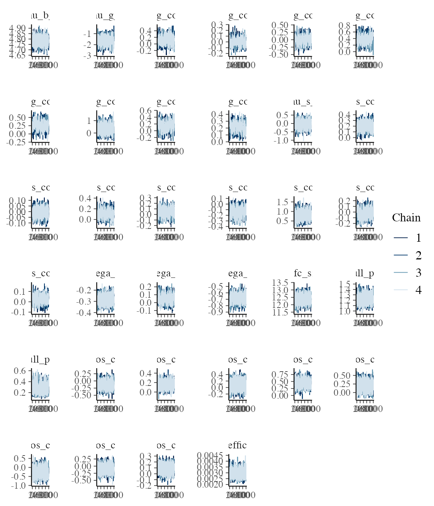
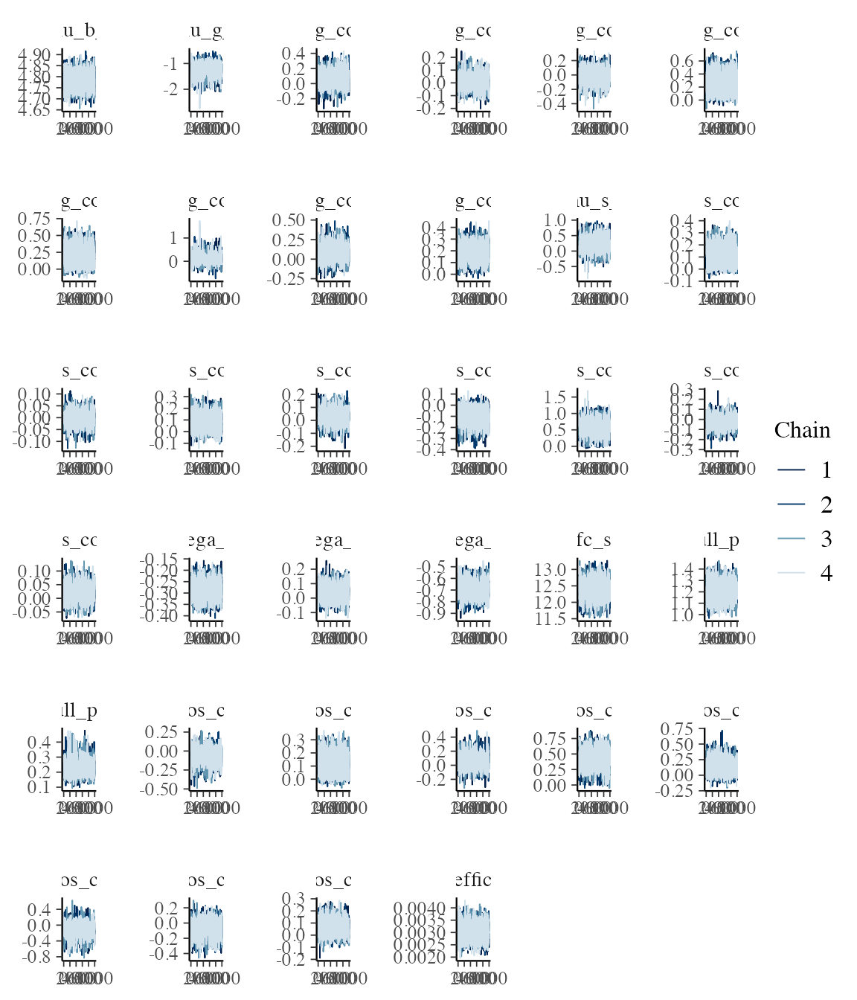
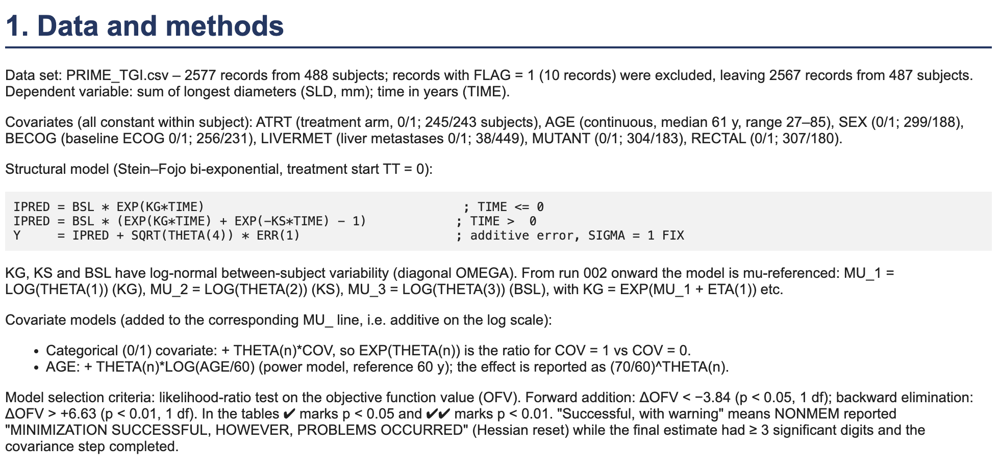
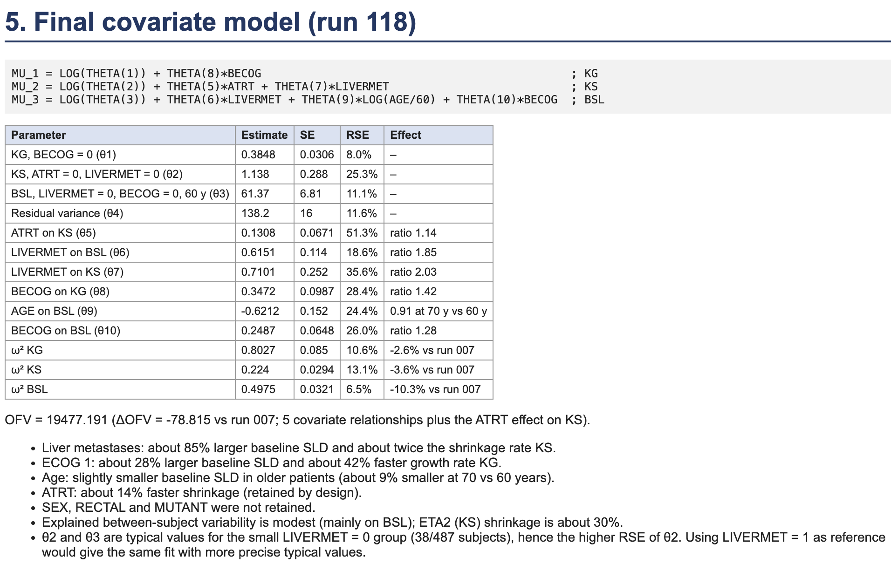
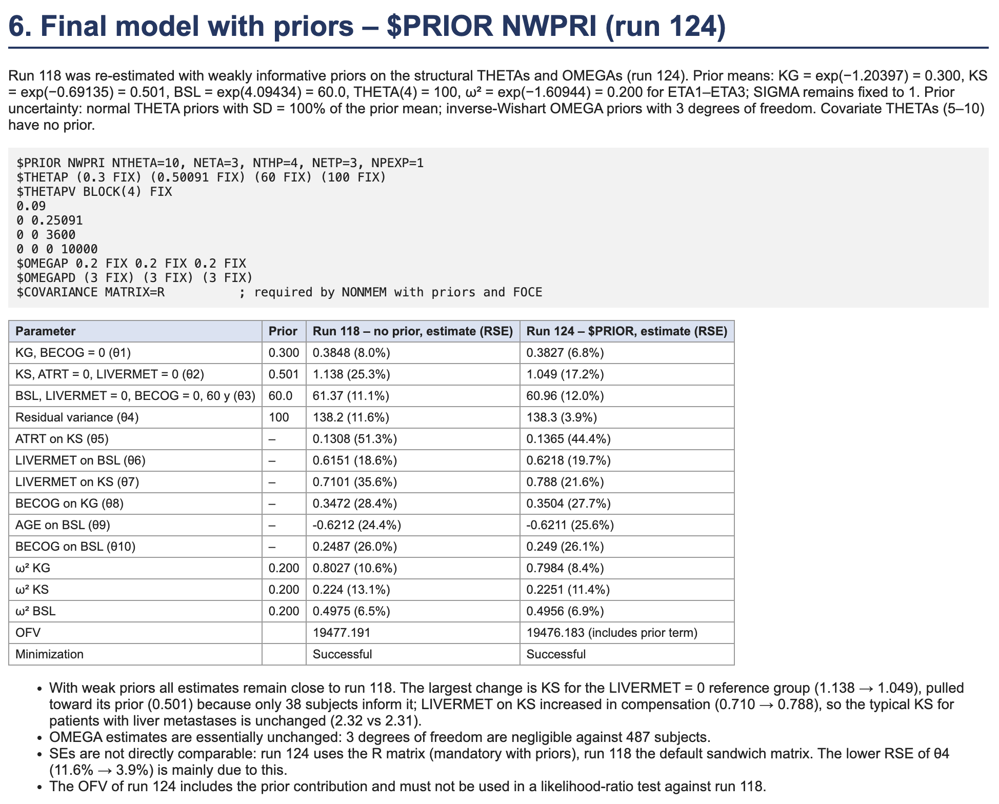

Introduction
This vignette prepares data from the PRIME study (ClinicalTrials.gov NCT00364013) for analysis with jmpost. PRIME was a randomised, multicentre, phase III study in previously untreated metastatic colorectal cancer. It compared first-line FOLFOX alone with FOLFOX plus panitumumab: 1,183 participants were randomised, with 590 in the comparator arm and 593 in the panitumumab arm. The study’s primary aim was to assess whether adding panitumumab improved progression-free survival (PFS), with overall survival, response, duration of response, time to progression, and safety assessed as secondary outcomes. The study completed in August 2009.
Data
We are fortunate to have access to the PRIME study data via Project Data Sphere (RRID:SCR_003726) (Green et al. 2015). The supplied data are ADaM-format SAS datasets. We begin with the subject-level dataset (adsl) to obtain each participant’s treatment assignment and survival or PFS outcome. Longitudinal tumour measurements are taken from the lesion dataset (adls): VISITDY provides the analysis time and LSSLD is the sum of longest diameters used as the tumour-size marker. We retain the participant identifier (SUBJID) in both datasets so that the subject-level event information can be joined to the repeated measurements. The biomarker (biomark) dataset contains the KRAS mutation status for each participant.
First we read the datasets from the supplied zip file, using a simple helper function:
library(jmpost)
zip_file <- system.file("extdata", "prime_subset.zip", package = "jmpost")
adsl <- read_sas7bdat_from_zip(zip_file, "adsl_pds2019.sas7bdat")
adls <- read_sas7bdat_from_zip(zip_file, "adls_pds2019.sas7bdat")
biomark <- read_sas7bdat_from_zip(zip_file, "biomark_pds2019.sas7bdat")Next we create the analysis datasets:
kras0 <- biomark |>
dplyr::select("SUBJID", "BMMTR1")
event_df0 <- adsl |>
dplyr::left_join(kras0, by = "SUBJID") |>
dplyr::mutate(STUDY = "1", EVENTYR = DTHDY / 365.25, EVENTFL = DTH) |>
dplyr::select(
"SUBJID", "STUDY", "ATRT", "EVENTYR", "EVENTFL",
"AGE", "SEX",
ECOG = "B_ECOG", "DIAGTYPE", "LIVERMET",
KRAS = "BMMTR1"
) |>
dplyr::mutate(
LIVERMET = factor(LIVERMET, levels = c("N", "Y")),
KRAS = factor(KRAS, levels = c("Wild-type", "Mutant")),
PRIMARY_SITE = factor(DIAGTYPE, levels = c("Colon", "Rectal")),
ECOG_BIN = forcats::fct_collapse(
dplyr::na_if(as.character(ECOG), ""),
"0" = "Fully active",
"1+" = c(
"In bed less than 50% of the time",
"Symptoms but ambulatory"
)
)
) |>
dplyr::select(
"SUBJID", "STUDY", "ATRT", "EVENTYR", "EVENTFL",
"AGE", "SEX", "ECOG_BIN", "KRAS", "LIVERMET", "PRIMARY_SITE"
)
uid_event0 <- unique(event_df0$SUBJID)
biom_df0 <- adls |>
dplyr::filter(LSCAT == "Target lesion", !is.na(LSSLD)) |>
dplyr::mutate(STUDY = "1", BIOMYR = VISITDY / 365.25, BIOMVAL = LSSLD) |>
dplyr::group_by(SUBJID, VISITDY) |>
dplyr::slice(1) |>
dplyr::ungroup() |>
dplyr::select("SUBJID", "BIOMYR", "BIOMVAL", "VISITDY") |>
dplyr::filter_out(dplyr::when_any(
SUBJID == "000424" & VISITDY == 442,
SUBJID == "000442" & VISITDY == 238,
SUBJID == "000710"
))
baseline_sld <- biom_df0 |>
dplyr::group_by(SUBJID) |>
dplyr::filter(VISITDY <= 0) |>
dplyr::filter(VISITDY == max(VISITDY)) |>
dplyr::summarize(BASE_SLD = BIOMVAL)
uid_biom0 <- unique(baseline_sld$SUBJID)
retain_uid <- intersect(uid_event0, uid_biom0)
event_df <- event_df0 |>
na.omit() |>
dplyr::filter(SUBJID %in% retain_uid) |>
dplyr::left_join(baseline_sld, by = "SUBJID")
desn0 <- event_df0 |>
dplyr::filter(SUBJID %in% retain_uid) |>
dplyr::select(SUBJID, STUDY, ATRT)
biom_df <- biom_df0 |>
dplyr::filter(SUBJID %in% retain_uid) |>
dplyr::left_join(desn0, by = "SUBJID")Because we want to use baseline covariates in the analysis, we need to make sure that we have discarded patients with missing baseline covariates.
So in the end we have two analysis datasets:
-
event_dfwith 428 rows contains the subject-level information including the survival (EVENTYRis the time to event in years, andEVENTFLis the event indicator with 1 indicating the patient died and 0 if the time is censored), and -
biom_dfwith 2474 rows contains the longitudinal tumour measurements (withBIOMYRas the time in years andBIOMVALas the sum of longest diameters in millimeters). Here we have filtered out certain observations for subject IDs000424,000442, and000710.
head(event_df)
#> # A tibble: 6 × 12
#> SUBJID STUDY ATRT EVENTYR EVENTFL AGE SEX ECOG_BIN KRAS LIVERMET
#> <chr> <chr> <chr> <dbl> <dbl> <dbl> <chr> <fct> <fct> <fct>
#> 1 000003 1 Panitumumab … 0.824 1 65 Male 1+ Muta… Y
#> 2 000007 1 Panitumumab … 0.928 1 52 Fema… 1+ Muta… Y
#> 3 000010 1 FOLFOX alone 1.51 1 54 Fema… 0 Muta… Y
#> 4 000013 1 Panitumumab … 0.539 1 54 Male 0 Wild… Y
#> 5 000016 1 FOLFOX alone 0.868 1 31 Male 0 Muta… Y
#> 6 000017 1 FOLFOX alone 2.86 0 57 Fema… 0 Muta… Y
#> # ℹ 2 more variables: PRIMARY_SITE <fct>, BASE_SLD <dbl>
head(biom_df)
#> # A tibble: 6 × 6
#> SUBJID BIOMYR BIOMVAL VISITDY STUDY ATRT
#> <chr> <dbl> <dbl> <dbl> <chr> <chr>
#> 1 000001 -0.0767 426 -28 1 FOLFOX alone
#> 2 000001 -0.00821 452 -3 1 FOLFOX alone
#> 3 000001 0.156 464 57 1 FOLFOX alone
#> 4 000003 -0.0301 118 -11 1 Panitumumab + FOLFOX
#> 5 000003 0.151 110 55 1 Panitumumab + FOLFOX
#> 6 000007 -0.0383 575 -14 1 Panitumumab + FOLFOXThe SUBJID variable serves as the unique identifier for each participant across both datasets.
We also center and scale the two continuous covariates, age and baseline SLD:
This is important to have the coefficients on the same scale and thus help with the prior setting and then the convergence of the MCMC sampling.
Analysis
Now let’s continue with the joint model analysis using the jmpost package.
We will use these covariates for overall survival as well as the growth and shrinkage means:
cov_form <- ~ ATRT + AGE + SEX + ECOG_BIN + KRAS + LIVERMET + PRIMARY_SITE + BASE_SLDFirst we create the DataJoint object that combines the subject-level and longitudinal data, specifying the appropriate formulas for the longitudinal and survival components:
library(jmpost)
jm_dat <- DataJoint(
subject = DataSubject(
data = event_df,
subject = "SUBJID",
arm = "ATRT",
study = "STUDY"
),
longitudinal = DataLongitudinal(
data = biom_df,
threshold = 3,
formula = BIOMVAL ~ BIOMYR
),
survival = DataSurvival(
data = event_df,
formula = update(cov_form, Surv(EVENTYR, EVENTFL) ~ .)
)
)
#> Error:
#> ! There are subjects in `longitudinal` that are not present in `subjects`Normal priors
Next we specify the joint model including the same covariates now for the longitudinal component:
jm_spec <- JointModel(
longitudinal = LongitudinalSteinFojoCov(
# Baseline - there is only one study here so just intercept:
mu_b_formula = ~1,
omega_b_formula = ~1,
# Shrinkage - include covariates for the mean:
mu_s_formula = cov_form,
omega_s_formula = ~1,
# Growth - include covariates for the mean:
mu_g_formula = cov_form,
omega_g_formula = ~1,
# Baseline intercept priors:
mu_b_intercept_prior = prior_normal(4.09434, 1),
omega_b_intercept_prior = prior_normal(-1.60944, 1),
# Shrinkage priors:
mu_s_intercept_prior = prior_normal(-0.69315, 1),
mu_s_coefficients_prior = prior_normal(0, 1),
omega_s_intercept_prior = prior_normal(-1.60944, 1),
# Growth priors:
mu_g_intercept_prior = prior_normal(-1.20397, 1),
mu_g_coefficients_prior = prior_normal(0, 1),
omega_g_intercept_prior = prior_normal(-1.60944, 1),
sigma = prior_lognormal(log(10), 1)
),
survival = SurvivalWeibullPH(beta = prior_normal(0, 1)),
# For a 10 mm/year difference, this puts approximately 95% prior probability on hazard ratios between 0.38 and 2.66:
link = linkDSLD(prior = prior_normal(0, 0.05))
)Then we can run our MCMC sampler:
We start with a small HMC step size to reduce numerical underflow in early proposals. Stan continues to adapt the step size during warmup. These settings do not establish that 100 warmup iterations are sufficient for the final analysis.
jm_samples_file <- "samples/jm_samples_clean.rds"
if (file.exists(jm_samples_file)) {
jm_samples <- readRDS(jm_samples_file)
} else {
options("jmpost.prior_shrinkage" = 0.999)
set.seed(12345) # Reproduce the initial values generated in R.
jm_samples <- sampleStanModel(
jm_spec,
data = jm_dat,
iter_warmup = 1000,
iter_sampling = 1000,
# smaller starting step eliminated the gamma/lognormal exceptions:
step_size = 0.001,
chains = 4,
parallel_chains = 4,
seed = 12345
)
saveObject(jm_samples, file = jm_samples_file)
}Let’s check the convergence of the MCMC chains for the population level parameters:
pop_pars <- c(
"lm_sfc_mu_b_intercept",
"lm_sfc_mu_g_intercept",
"lm_sfc_mu_g_coefficients",
"lm_sfc_mu_s_intercept",
"lm_sfc_mu_s_coefficients",
"lm_sfc_omega_b_intercept",
"lm_sfc_omega_g_intercept",
"lm_sfc_omega_s_intercept",
"lm_sfc_sigma",
"sm_weibull_ph_gamma",
"sm_weibull_ph_lambda",
"beta_os_cov",
"link_coefficients"
)
jm_mcmc <- cmdstanr::as.CmdStanMCMC(jm_samples)
jm_summary <- jm_mcmc$summary(pop_pars)
summary(jm_summary$rhat)
#> Min. 1st Qu. Median Mean 3rd Qu. Max.
#> 1.000 1.001 1.002 1.005 1.007 1.024Here we see that the sampling worked ok, as all the R-hat values are around 1.
This is also confirmed when looking at the trace plots:
jm_draws <- jm_mcmc$draws(pop_pars)
library(bayesplot)
mcmc_trace(jm_draws)
plot of chunk unnamed-chunk-4
We can now inspect the covariate coefficients for overall survival (OS), tumour growth and tumour shrinkage. As in the covariate-selection vignette, coef() uses the fitted design-matrix column names to label the posterior summaries automatically. The growth and shrinkage models use the same covariate formula here. The table reports posterior medians and 90% credible intervals (q5 to q95), alongside R-hat and bulk effective sample size.
coefficient_summary <- coef(jm_samples) |>
dplyr::mutate(
component = dplyr::case_when(
component == "survival" ~ "OS",
predictor == "mu_g" ~ "Growth",
predictor == "mu_s" ~ "Shrinkage"
)
) |>
dplyr::select(component, covariate, median, q5, q95, rhat, ess_bulk)
knitr::kable(coefficient_summary, digits = 3)| component | covariate | median | q5 | q95 | rhat | ess_bulk |
|---|---|---|---|---|---|---|
| OS | ATRTPanitumumab + FOLFOX | -0.131 | -0.347 | 0.087 | 1.002 | 3628.593 |
| OS | AGE | 0.156 | 0.038 | 0.277 | 1.001 | 3857.023 |
| OS | SEXMale | 0.077 | -0.150 | 0.302 | 1.001 | 3150.267 |
| OS | ECOG_BIN1+ | 0.448 | 0.237 | 0.660 | 1.002 | 3408.732 |
| OS | KRASMutant | 0.205 | -0.008 | 0.424 | 1.000 | 3679.880 |
| OS | LIVERMETY | -0.247 | -0.620 | 0.159 | 1.001 | 2622.121 |
| OS | PRIMARY_SITERectal | -0.093 | -0.313 | 0.124 | 1.001 | 3709.880 |
| OS | BASE_SLD | 0.094 | -0.022 | 0.201 | 1.002 | 4909.650 |
| Shrinkage | ATRTPanitumumab + FOLFOX | 0.196 | 0.082 | 0.315 | 1.007 | 859.717 |
| Shrinkage | AGE | -0.010 | -0.073 | 0.052 | 1.003 | 854.523 |
| Shrinkage | SEXMale | 0.114 | -0.005 | 0.242 | 1.008 | 717.072 |
| Shrinkage | ECOG_BIN1+ | 0.038 | -0.087 | 0.159 | 1.007 | 894.919 |
| Shrinkage | KRASMutant | -0.137 | -0.267 | -0.009 | 1.004 | 737.480 |
| Shrinkage | LIVERMETY | 0.805 | 0.478 | 1.178 | 1.000 | 1023.540 |
| Shrinkage | PRIMARY_SITERectal | -0.013 | -0.139 | 0.108 | 1.007 | 828.066 |
| Shrinkage | BASE_SLD | 0.025 | -0.037 | 0.085 | 1.012 | 591.301 |
| Growth | ATRTPanitumumab + FOLFOX | 0.122 | -0.081 | 0.340 | 1.008 | 445.659 |
| Growth | AGE | 0.009 | -0.095 | 0.116 | 1.017 | 396.401 |
| Growth | SEXMale | -0.003 | -0.237 | 0.219 | 1.005 | 349.918 |
| Growth | ECOG_BIN1+ | 0.365 | 0.148 | 0.579 | 1.024 | 340.114 |
| Growth | KRASMutant | 0.283 | 0.059 | 0.483 | 1.013 | 353.553 |
| Growth | LIVERMETY | 0.331 | -0.173 | 0.911 | 1.002 | 859.491 |
| Growth | PRIMARY_SITERectal | 0.141 | -0.082 | 0.361 | 1.016 | 372.525 |
| Growth | BASE_SLD | 0.217 | 0.108 | 0.319 | 1.014 | 337.689 |
The OS coefficients are on the log-hazard scale: exponentiating a coefficient gives the hazard ratio, conditional on the other covariates and the linked tumour trajectory. The growth and shrinkage coefficients act on the log scale of their respective rates, so exponentiating them gives a ratio of the population median rates. Positive coefficients therefore indicate higher mortality hazard, faster growth or faster shrinkage, respectively. For age and baseline SLD, each coefficient describes a one-standard-deviation increase; factor coefficients compare the named level with its reference level. Intervals that span zero indicate uncertainty about the direction of the association.
Horseshoe priors
We can also try to use horseshoe priors in order to do variable selection:
We use partial non-centring for the horseshoe coefficients and centre the subject-specific growth and shrinkage effects. These choices change the sampling coordinates while preserving the prior distributions and likelihood. The scale_noncentred argument below is a computational tuning parameter, separate from the global shrinkage and slab scales. Note that a longer warmup or sampling run alone did not resolve divergent transitions or persistent treedepth saturation.
jm_horseshoe_spec <- JointModel(
longitudinal = LongitudinalSteinFojoCov(
# Baseline - there is only one study here so just intercept:
mu_b_formula = ~1,
omega_b_formula = ~1,
# Shrinkage - include covariates for the mean:
mu_s_formula = cov_form,
omega_s_formula = ~1,
# Growth - include covariates for the mean:
mu_g_formula = cov_form,
omega_g_formula = ~1,
# Baseline intercept priors:
mu_b_intercept_prior = prior_normal(4.09434, 1),
omega_b_intercept_prior = prior_normal(-1.60944, 1),
# Shrinkage priors:
mu_s_intercept_prior = prior_normal(-0.69315, 1),
mu_s_coefficients_prior = prior_horseshoe(scale_noncentred = 0.1),
omega_s_intercept_prior = prior_normal(-1.60944, 1),
# Growth priors:
mu_g_intercept_prior = prior_normal(-1.20397, 1),
mu_g_coefficients_prior = prior_horseshoe(scale_noncentred = 0.1),
omega_g_intercept_prior = prior_normal(-1.60944, 1),
sigma = prior_lognormal(log(10), 1),
centred_shrinkage = TRUE,
centred_growth = TRUE
),
survival = SurvivalWeibullPH(
beta = prior_horseshoe(scale_noncentred = 0.1)
),
# For a 10 mm/year difference, this puts approximately 95% prior probability on hazard ratios between 0.38 and 2.66:
link = linkDSLD(prior = prior_normal(0, 0.05))
)Then we can run our MCMC sampler:
jm_horseshoe_samples_file <- "samples/jm_horseshoe_samples.rds"
if (file.exists(jm_horseshoe_samples_file)) {
jm_horseshoe_samples <- readRDS(jm_horseshoe_samples_file)
} else {
options("jmpost.prior_shrinkage" = 0.999)
set.seed(54321) # Reproduce the initial values generated in R.
jm_horseshoe_samples <- sampleStanModel(
jm_horseshoe_spec,
data = jm_dat,
iter_warmup = 1000,
iter_sampling = 1000,
step_size = 0.001,
chains = 4,
parallel_chains = 4,
seed = 24680
)
saveObject(jm_horseshoe_samples, file = jm_horseshoe_samples_file)
}Let’s check again the convergence:
jm_horseshoe_mcmc <- cmdstanr::as.CmdStanMCMC(jm_horseshoe_samples)
jm_horseshoe_mcmc$diagnostic_summary()
#> $num_divergent
#> [1] 1 0 0 0
#>
#> $num_max_treedepth
#> [1] 0 0 0 0
#>
#> $ebfmi
#> [1] 0.5881847 0.5840649 0.5809806 0.5859222We assess convergence using the sampler diagnostics above. We see that across the 4 chains there was only a single divergent transition, none reached the maximum treedepth and the E-BFMI (Energy Bayesian Fraction of Missing Information) values are above 0.5, where already values above 0.3 would indicate good exploration of the posterior.
Let’s check the traceplots:
jm_horseshoe_draws <- jm_horseshoe_mcmc$draws(pop_pars)
mcmc_trace(jm_horseshoe_draws)
plot of chunk unnamed-chunk-6
These look good, too.
Let’s look at the shrinkage factors:
Let’s tabulate the variable, median and 5% and 95% quantiles:
| variable | median | q5 | q95 |
|---|---|---|---|
| longitudinal.mu_s:ATRTPanitumumab + FOLFOX | 0.996 | 0.861 | 1.000 |
| longitudinal.mu_s:AGE | 1.000 | 0.980 | 1.000 |
| longitudinal.mu_s:SEXMale | 0.998 | 0.925 | 1.000 |
| longitudinal.mu_s:ECOG_BIN1+ | 0.999 | 0.966 | 1.000 |
| longitudinal.mu_s:KRASMutant | 0.998 | 0.908 | 1.000 |
| longitudinal.mu_s:LIVERMETY | 0.938 | 0.156 | 0.997 |
| longitudinal.mu_s:PRIMARY_SITERectal | 0.999 | 0.961 | 1.000 |
| longitudinal.mu_s:BASE_SLD | 1.000 | 0.970 | 1.000 |
| longitudinal.mu_g:ATRTPanitumumab + FOLFOX | 0.998 | 0.884 | 1.000 |
| longitudinal.mu_g:AGE | 0.999 | 0.924 | 1.000 |
| longitudinal.mu_g:SEXMale | 0.999 | 0.904 | 1.000 |
| longitudinal.mu_g:ECOG_BIN1+ | 0.982 | 0.514 | 1.000 |
| longitudinal.mu_g:KRASMutant | 0.990 | 0.717 | 1.000 |
| longitudinal.mu_g:LIVERMETY | 0.997 | 0.771 | 1.000 |
| longitudinal.mu_g:PRIMARY_SITERectal | 0.998 | 0.872 | 1.000 |
| longitudinal.mu_g:BASE_SLD | 0.989 | 0.742 | 0.999 |
| ATRTPanitumumab + FOLFOX | 0.998 | 0.881 | 1.000 |
| AGE | 0.995 | 0.833 | 1.000 |
| SEXMale | 0.998 | 0.888 | 1.000 |
| ECOG_BIN1+ | 0.962 | 0.337 | 0.998 |
| KRASMutant | 0.996 | 0.787 | 1.000 |
| LIVERMETY | 0.998 | 0.780 | 1.000 |
| PRIMARY_SITERectal | 0.998 | 0.887 | 1.000 |
| BASE_SLD | 0.998 | 0.911 | 1.000 |
We see here that most covariates have high shrinkage values close to 1, which indicates that the covariate is not so important for the outcome it is used to model. Exceptions where the 95% quantile is below 1 are the following:
-
longitudinal.mu_s:LIVERMETY: liver metastases on shrinkage -
longitudinal.mu_g:BASE_SLD: baseline SLD on growth -
ECOG_BIN1+: ECOG 1+/0 on survival hazard
And we can compare that with the coefficient estimates:
coef(jm_horseshoe_samples) |>
dplyr::mutate(
component = dplyr::case_when(
component == "survival" ~ "OS",
predictor == "mu_g" ~ "Growth",
predictor == "mu_s" ~ "Shrinkage"
)
) |>
dplyr::select(component, covariate, median, q5, q95) |>
knitr::kable(digits = 3)| component | covariate | median | q5 | q95 |
|---|---|---|---|---|
| OS | ATRTPanitumumab + FOLFOX | -0.020 | -0.218 | 0.084 |
| OS | AGE | 0.119 | 0.003 | 0.244 |
| OS | SEXMale | 0.015 | -0.091 | 0.210 |
| OS | ECOG_BIN1+ | 0.431 | 0.181 | 0.648 |
| OS | KRASMutant | 0.090 | -0.034 | 0.330 |
| OS | LIVERMETY | -0.016 | -0.350 | 0.133 |
| OS | PRIMARY_SITERectal | -0.023 | -0.231 | 0.081 |
| OS | BASE_SLD | 0.042 | -0.026 | 0.158 |
| Shrinkage | ATRTPanitumumab + FOLFOX | 0.119 | -0.002 | 0.246 |
| Shrinkage | AGE | -0.001 | -0.045 | 0.040 |
| Shrinkage | SEXMale | 0.054 | -0.018 | 0.195 |
| Shrinkage | ECOG_BIN1+ | 0.005 | -0.053 | 0.104 |
| Shrinkage | KRASMutant | -0.075 | -0.216 | 0.010 |
| Shrinkage | LIVERMETY | 0.594 | 0.208 | 0.962 |
| Shrinkage | PRIMARY_SITERectal | -0.004 | -0.098 | 0.062 |
| Shrinkage | BASE_SLD | 0.009 | -0.024 | 0.067 |
| Growth | ATRTPanitumumab + FOLFOX | 0.015 | -0.077 | 0.198 |
| Growth | AGE | 0.004 | -0.065 | 0.090 |
| Growth | SEXMale | -0.002 | -0.154 | 0.129 |
| Growth | ECOG_BIN1+ | 0.283 | 0.021 | 0.525 |
| Growth | KRASMutant | 0.195 | -0.005 | 0.437 |
| Growth | LIVERMETY | 0.020 | -0.152 | 0.445 |
| Growth | PRIMARY_SITERectal | 0.027 | -0.070 | 0.233 |
| Growth | BASE_SLD | 0.192 | 0.075 | 0.303 |
Also here we see that the 95% credible interval excludes 0 for the covariates we have seen with shrinkage factors below 1:
-
ECOG_BIN1+on survival -
LIVERMETYon shrinkage -
BASE_SLDon growth
Interestingly we also see in addition
-
AGEon survival -
ECOG_BIN1+on growth
(Indeed if we use 4 digits for rounding the upper quantile above then we can also see them there already.)
Reproducing NONMEM results
Finally we are going to try to reproduce results from NONMEM on the same data set. We include here some relevant snapshots.



The NONMEM model
The NONMEM model is a longitudinal-only Stein-Fojo tumour growth inhibition (TGI) model, i.e. there is no survival submodel and no link. With time in years (treatment start at ) the sum of longest diameters (SLD) of subject is
with additive normal residual error , where is a variance. This is the same structural model as LongitudinalSteinFojoCov. The growth rate KG, the shrinkage rate KS and the baseline BSL are log-normally distributed with independent random effects (diagonal ). The final covariate model (run 118, also used in run 124) is explicitly
Here BECOG is 0 for ECOG 0 and 1 for ECOG 1+, ATRT is 0 for FOLFOX alone and 1 for panitumumab + FOLFOX, and LIVERMET is 0 for no and 1 for yes. The typical values , and are conditional population medians. The covariate relationships are summarised below:
| Parameter | Covariates (effect on the log scale) |
|---|---|
| KG (growth) |
BECOG (ECOG 1+ vs 0) |
| KS (shrinkage) |
ATRT (panitumumab + FOLFOX vs FOLFOX alone), LIVERMET (liver metastases yes vs no) |
| BSL (baseline) |
LIVERMET, BECOG, and age as log(AGE / 60) (power model, reference age 60 years) |
Note that the continuous covariate (age) is therefore not centred and scaled as above, and that the reference group for the typical values to is: ECOG 0, no liver metastases, FOLFOX alone (for KS only), age 60. SEX, RECTAL (primary site) and MUTANT (KRAS) were not retained in the NONMEM covariate search.
Run 124 adds the following priors, with all other parameters (the covariate coefficients ) having no prior, i.e. flat:
- Typical values on the natural (not log) scale, independent normal priors with standard deviation equal to the prior mean: (KG) , (KS) , (BSL) .
- The residual variance .
- The three random effect variances have independent inverse-Wishart priors with prior value and 3 degrees of freedom, which for blocks are inverse-gamma priors with shape and scale . (This is confirmed by the “PRIOR CONSTANT TO OBJECTIVE FUNCTION” of 31.07 in the NONMEM output, which is reproduced exactly by these normal and inverse-gamma densities.)
The control file constrains to be positive. NONMEM evaluates the normal prior penalties within these bounds; the corresponding Bayesian priors are normal distributions restricted to positive values. Their truncation normalisers are constant because the prior hyperparameters are fixed, so they do not affect the estimates.
Important differences to keep in mind when comparing:
- NONMEM (FOCE-I with priors) reports a penalised maximum likelihood / posterior mode estimate in the parametrisation of and , while
jmpostreports posterior summaries (here medians) from a full Bayesian analysis that samples the random effects and marginalises them in the population summaries. FOCE approximates the marginal likelihood, so even matching priors and data do not imply identical estimates. Prior influence can still matter for the reference-group KS, which is informed by only 38 subjects without liver metastases. - The
jmpostparameters are the log typical values, the log standard deviations and the residual standard deviation , whereas the NONMEM priors are on , and . To reproduce them exactly, priors on these transformed scales (with Jacobian) are needed; see below.
Comparing population posterior modes on the NONMEM scales would remove the mode-versus-median difference, but simply calling CmdStanR’s $optimize() on the current hierarchical Stan model optimises population parameters and patient random effects together. This joint mode is not the population mode after integrating out the random effects, which is the quantity approximated by FOCE with priors. Modes also depend on the parameter scale and Jacobian adjustments. A closer optimisation-based comparison would therefore require an objective that marginalises the random effects and expresses the population density on the NONMEM scales; switching from sampling to optimisation alone does not guarantee closer agreement.
NONMEM estimates
We store the run 124 estimates from NONMEM/PRIME_TGI_124.ext (final-estimate row -1000000000), with relative standard errors from the NONMEM covariance step with the R matrix, and convert them to the jmpost scale for later comparison. These values are embedded here so that rendering does not depend on the original NONMEM output directory:
nonmem_124 <- tibble::tribble(
~nonmem, ~predictor, ~covariate, ~estimate, ~rse_percent, ~scale,
"theta1: KG, ECOG 0", "mu_g", "(Intercept)", 0.382695, 6.8, "log",
"theta2: KS, FOLFOX alone, no liver metastases", "mu_s", "(Intercept)", 1.04936, 17.2, "log",
"theta3: BSL, no liver metastases, ECOG 0, age 60", "mu_b", "(Intercept)", 60.9599, 12.0, "log",
"theta4: residual variance", "sigma", NA, 138.252, 3.9, "sqrt",
"theta5: ATRT on KS", "mu_s", "ATRTPanitumumab + FOLFOX", 0.136518, 44.4, "identity",
"theta6: LIVERMET on BSL", "mu_b", "LIVERMETY", 0.621805, 19.7, "identity",
"theta7: LIVERMET on KS", "mu_s", "LIVERMETY", 0.787987, 21.6, "identity",
"theta8: BECOG on KG", "mu_g", "ECOG_BIN1+", 0.350402, 27.7, "identity",
"theta9: AGE on BSL (power, per log(AGE / 60))", "mu_b", "LOG_AGE60", -0.621084, 25.6, "identity",
"theta10: BECOG on BSL", "mu_b", "ECOG_BIN1+", 0.248961, 26.1, "identity",
"omega2 KG", "omega_g", "(Intercept)", 0.798437, 8.4, "half_log",
"omega2 KS", "omega_s", "(Intercept)", 0.225085, 11.4, "half_log",
"omega2 BSL", "omega_b", "(Intercept)", 0.495594, 6.9, "half_log"
) |>
dplyr::rowwise() |>
dplyr::mutate(
jmpost = switch(scale,
log = log(estimate),
sqrt = sqrt(estimate),
half_log = log(sqrt(estimate)),
identity = estimate
)
) |>
dplyr::ungroup()
knitr::kable(nonmem_124, digits = 4)| nonmem | predictor | covariate | estimate | rse_percent | scale | jmpost |
|---|---|---|---|---|---|---|
| theta1: KG, ECOG 0 | mu_g | (Intercept) | 0.3827 | 6.8 | log | -0.9605 |
| theta2: KS, FOLFOX alone, no liver metastases | mu_s | (Intercept) | 1.0494 | 17.2 | log | 0.0482 |
| theta3: BSL, no liver metastases, ECOG 0, age 60 | mu_b | (Intercept) | 60.9599 | 12.0 | log | 4.1102 |
| theta4: residual variance | sigma | NA | 138.2520 | 3.9 | sqrt | 11.7581 |
| theta5: ATRT on KS | mu_s | ATRTPanitumumab + FOLFOX | 0.1365 | 44.4 | identity | 0.1365 |
| theta6: LIVERMET on BSL | mu_b | LIVERMETY | 0.6218 | 19.7 | identity | 0.6218 |
| theta7: LIVERMET on KS | mu_s | LIVERMETY | 0.7880 | 21.6 | identity | 0.7880 |
| theta8: BECOG on KG | mu_g | ECOG_BIN1+ | 0.3504 | 27.7 | identity | 0.3504 |
| theta9: AGE on BSL (power, per log(AGE / 60)) | mu_b | LOG_AGE60 | -0.6211 | 25.6 | identity | -0.6211 |
| theta10: BECOG on BSL | mu_b | ECOG_BIN1+ | 0.2490 | 26.1 | identity | 0.2490 |
| omega2 KG | omega_g | (Intercept) | 0.7984 | 8.4 | half_log | -0.1125 |
| omega2 KS | omega_s | (Intercept) | 0.2251 | 11.4 | half_log | -0.7456 |
| omega2 BSL | omega_b | (Intercept) | 0.4956 | 6.9 | half_log | -0.3510 |
Here jmpost is the NONMEM estimate on the scale of the corresponding jmpost parameter: log typical values for the intercepts (lm_sfc_mu_*_intercept), the residual standard deviation (lm_sfc_sigma), the log of the random effect standard deviations (lm_sfc_omega_*_intercept), and unchanged covariate coefficients (lm_sfc_mu_*_coefficients). The OFV of run 124 is 19476.183 (including the prior term); it is not comparable to the jmpost log likelihood.
Data
The NONMEM data set has 487 subjects with 2567 tumour measurements (after removal of 10 flagged records). Since there is no survival part, we do not need the KRAS, sex, primary site and baseline SLD covariates used above, and thus we do not have to drop the subjects with missing values in these. We therefore rebuild the subject-level data with only the covariates that are needed, and we use the raw age (before centring and scaling) to create log(AGE / 60). This second preparation differs from the joint-analysis preparation above: following the reference R script, blank ECOG is assigned BECOG = 0 rather than discarded. This retains subject 000930 and their three measurements. The assignment reproduces the reference analysis’s imputation decision; it does not establish that the subject’s observed ECOG was 0. The tumour measurements and flagged-record exclusions are shared with biom_df0 above.
nm_subject_df <- event_df0 |>
dplyr::mutate(
LOG_AGE60 = log(AGE / 60),
ECOG_BIN = forcats::fct_na_value_to_level(ECOG_BIN, level = "0"),
SEX = forcats::fct_relevel(SEX, "Male"),
KRAS = forcats::fct_na_value_to_level(KRAS, level = "Wild-type")
) |>
dplyr::select("SUBJID", "STUDY", "ATRT", "LOG_AGE60", "SEX", "ECOG_BIN", "LIVERMET", "KRAS", "PRIMARY_SITE") |>
dplyr::filter(SUBJID %in% biom_df0$SUBJID)
nm_biom_df <- biom_df0 |>
dplyr::filter(SUBJID %in% nm_subject_df$SUBJID) |>
dplyr::left_join(nm_subject_df[, c("SUBJID", "STUDY", "ATRT")], by = "SUBJID")
# Check that we are using the same data as NONMEM:
stopifnot(
nrow(nm_subject_df) == 487,
nrow(nm_biom_df) == 2567
)We can compare the factor level observation counts with the ones from the NONMEM report to ensure that we (very likely) use the same dataset: “ATRT (treatment arm, 0/1; 245/243 subjects), AGE (continuous, median 61 y, range 27–85), SEX (0/1; 299/188), BECOG (baseline ECOG 0/1; 256/231), LIVERMET (liver metastases 0/1; 38/449), MUTANT (0/1; 304/183), RECTAL (0/1; 307/180).”
table(nm_subject_df$ATRT) # not clear how NONMEM has 243 for Panitumumab + FOLFOX
#>
#> FOLFOX alone Panitumumab + FOLFOX
#> 245 242
table(nm_subject_df$ECOG_BIN)
#>
#> 0 1+
#> 256 231
table(nm_subject_df$LIVERMET)
#>
#> N Y
#> 38 449
table(nm_subject_df$SEX)
#>
#> Male Female
#> 299 188
table(nm_subject_df$KRAS)
#>
#> Wild-type Mutant
#> 304 183
table(nm_subject_df$PRIMARY_SITE)
#>
#> Colon Rectal
#> 307 180Now that looks ok, and we specify the data object just with subject and longitudinal data:
nm_dat <- DataJoint(
subject = DataSubject(
data = nm_subject_df,
subject = "SUBJID",
arm = "ATRT",
study = "STUDY"
),
longitudinal = DataLongitudinal(
data = nm_biom_df,
formula = BIOMVAL ~ BIOMYR
)
)Note that we do not specify a threshold, so no observations are treated as censored, as in NONMEM.
The jmpost model
The model maps to LongitudinalSteinFojoCov as follows. The mu_* predictors use the default "linear" parametrisation, mu = intercept + X beta, which enters as psi = exp(mu + eta * omega). This is the mu-referenced NONMEM model, e.g. MU_1 = LOG(THETA(1)) + THETA(8) * BECOG: the intercepts are and the coefficients are . The omega_* predictors use the default "log-linear" parametrisation (intercept-only formulas), so . Observation error is additive (scaled_variance = FALSE) with standard deviation sigma .
To reproduce the NONMEM priors, place the distributions on the NONMEM scales using transform. The transformation maps a declared jmpost parameter to the scale on which the density is evaluated; jmpost adds the Jacobian automatically:
- For
mu_{b,s,g}_intercept_prior, useprior_normal(mean, sd, transform = prior_transform_exp()). This places the normal prior on , restricted to positive values. - For
omega_{b,s,g}_intercept_prior, useprior_invgamma(1.5, 0.3, transform = prior_transform_exp(scale = 2)). The density is on . - For the residual standard deviation
sigma, useprior_normal(100, 100, transform = prior_transform_square()). The density is on .LongitudinalSteinFojoCov()applies a very small positive lower bound tosigma; the corresponding truncation bound on the density scale is its square. - For the covariate coefficients , use
prior_flat(). This adds no prior density term on the coefficient scale; its default normal distribution is used only for initial values.
These transformations specify prior scales independently of the predictor parametrizations above. The truncation normalisers and the log(2) terms are constant here, so they do not change posterior shape.
We use the default (non-centred) subject-level parametrisation for growth and shrinkage and the centred one for the baseline.
nm_spec <- JointModel(
longitudinal = LongitudinalSteinFojoCov(
mu_b_formula = ~ LIVERMET + LOG_AGE60 + ECOG_BIN,
omega_b_formula = ~1,
mu_s_formula = ~ ATRT + LIVERMET,
omega_s_formula = ~1,
mu_g_formula = ~ECOG_BIN,
omega_g_formula = ~1,
mu_b_parametrization = "linear",
mu_s_parametrization = "linear",
mu_g_parametrization = "linear",
omega_b_parametrization = "log-linear",
omega_s_parametrization = "log-linear",
omega_g_parametrization = "log-linear",
# Baseline: theta3 ~ N(60, 60^2) on the positive natural scale.
mu_b_intercept_prior = prior_normal(
60, 60,
transform = prior_transform_exp()
),
mu_b_coefficients_prior = prior_flat(),
omega_b_intercept_prior = prior_invgamma(
1.5, 0.3,
transform = prior_transform_exp(scale = 2)
),
# Shrinkage: theta2 ~ N(0.50091, 0.50091^2).
mu_s_intercept_prior = prior_normal(
0.50091, 0.50091,
transform = prior_transform_exp()
),
mu_s_coefficients_prior = prior_flat(),
omega_s_intercept_prior = prior_invgamma(
1.5, 0.3,
transform = prior_transform_exp(scale = 2)
),
# Growth: theta1 ~ N(0.3, 0.3^2).
mu_g_intercept_prior = prior_normal(
0.3, 0.3,
transform = prior_transform_exp()
),
mu_g_coefficients_prior = prior_flat(),
omega_g_intercept_prior = prior_invgamma(
1.5, 0.3,
transform = prior_transform_exp(scale = 2)
),
# sigma^2 = theta4 ~ N(100, 100^2).
sigma = prior_normal(
100, 100,
transform = prior_transform_square()
),
scaled_variance = FALSE
)
)Then we run the sampler:
nm_samples_file <- "samples/nm_samples.rds"
if (file.exists(nm_samples_file)) {
nm_samples <- readRDS(nm_samples_file)
} else {
options("jmpost.prior_shrinkage" = 0.999)
set.seed(2468)
nm_samples <- sampleStanModel(
nm_spec,
data = nm_dat,
iter_warmup = 1000,
iter_sampling = 1000,
chains = 4,
parallel_chains = 4,
step_size = 0.001,
seed = 2468
)
saveObject(nm_samples, file = nm_samples_file)
}Comparison
The saved fit contains four chains with 1,000 post-warmup draws each. We first check the sampler diagnostics and retain the parameter names alongside the summaries on the internal jmpost scales.
nm_pop_pars <- c(
"lm_sfc_mu_b_intercept",
"lm_sfc_mu_s_intercept",
"lm_sfc_mu_g_intercept",
"lm_sfc_omega_b_intercept",
"lm_sfc_omega_s_intercept",
"lm_sfc_omega_g_intercept",
"lm_sfc_sigma"
)
nm_mcmc <- cmdstanr::as.CmdStanMCMC(nm_samples)
nm_mcmc$diagnostic_summary()
#> $num_divergent
#> [1] 0 0 0 0
#>
#> $num_max_treedepth
#> [1] 0 0 0 0
#>
#> $ebfmi
#> [1] 0.5935062 0.6052086 0.5398737 0.5635327
nm_summary <- nm_mcmc$summary(nm_pop_pars)
nm_coef <- coef(nm_samples)
nm_diagnostics <- dplyr::bind_rows(nm_summary, nm_coef) |>
dplyr::select(variable, median, q5, q95, rhat, ess_bulk)
knitr::kable(nm_diagnostics, digits = 3)| variable | median | q5 | q95 | rhat | ess_bulk |
|---|---|---|---|---|---|
| lm_sfc_mu_b_intercept | 4.118 | 3.908 | 4.325 | 1.001 | 4873.358 |
| lm_sfc_mu_s_intercept | 0.020 | -0.280 | 0.290 | 1.000 | 1542.152 |
| lm_sfc_mu_g_intercept | -1.077 | -1.208 | -0.951 | 1.007 | 249.676 |
| lm_sfc_omega_b_intercept | -0.335 | -0.390 | -0.278 | 1.001 | 6376.284 |
| lm_sfc_omega_s_intercept | -0.646 | -0.743 | -0.544 | 1.003 | 1038.723 |
| lm_sfc_omega_g_intercept | -0.050 | -0.124 | 0.025 | 1.002 | 621.644 |
| lm_sfc_sigma | 11.826 | 11.453 | 12.239 | 1.003 | 1833.788 |
| lm_sfc_mu_b_coefficients[1] | 0.607 | 0.400 | 0.825 | 1.003 | 5280.720 |
| lm_sfc_mu_b_coefficients[2] | -0.626 | -0.887 | -0.356 | 1.002 | 9957.419 |
| lm_sfc_mu_b_coefficients[3] | 0.250 | 0.140 | 0.364 | 1.000 | 9010.584 |
| lm_sfc_mu_s_coefficients[1] | 0.138 | 0.028 | 0.249 | 1.006 | 803.572 |
| lm_sfc_mu_s_coefficients[2] | 0.771 | 0.508 | 1.066 | 1.001 | 1661.253 |
| lm_sfc_mu_g_coefficients[1] | 0.350 | 0.173 | 0.524 | 1.011 | 318.822 |
There are no divergent transitions or maximum-treedepth hits, and E-BFMI is above 0.5 in every chain. Mixing is slower for the growth intercept and its ECOG coefficient (bulk effective sample sizes approximately 250 and 319; R-hat approximately 1.007 and 1.011). These parameters would benefit from more effective draws before drawing conclusions about small differences.
The same estimands side by side
The next table puts all 13 population parameters on the NONMEM scales: typical KG and KS in inverse years, typical BSL in mm, residual variance in mm squared, covariate coefficients on their original log-effect/power scales, and between-subject variances of the log parameters. Reference groups are those specified above. The jmpost columns are posterior medians and 90% equal-tailed credible intervals, computed after transforming each draw. NONMEM reports FOCE-I estimates with priors and relative standard errors (RSE, %); these RSEs are covariance-step uncertainty measures, not posterior credible intervals.
# Match by predictor and fitted design-matrix names, rather than row order.
nm_parameter_map <- dplyr::bind_rows(
tibble::tibble(
predictor = c(
"mu_b", "mu_s", "mu_g", "omega_b", "omega_s", "omega_g",
"sigma"
),
covariate = c(rep("(Intercept)", 6), NA_character_),
variable = nm_pop_pars
),
dplyr::select(nm_coef, predictor, covariate, variable)
)
nm_comparison <- nonmem_124 |>
dplyr::left_join(
nm_parameter_map,
by = c("predictor", "covariate")
)
stopifnot(
nrow(nm_comparison) == 13L,
!anyNA(nm_comparison$variable),
!anyDuplicated(nm_comparison$variable)
)
nm_comparison_draws <- posterior::as_draws_matrix(
nm_mcmc$draws(nm_comparison$variable)
)
nm_native_summary <- lapply(seq_len(nrow(nm_comparison)), function(i) {
draws <- nm_comparison_draws[, nm_comparison$variable[i]]
# Invert the NONMEM-to-jmpost transformations defined earlier.
draws <- switch(nm_comparison$scale[i],
log = exp(draws),
sqrt = draws^2,
half_log = exp(2 * draws),
identity = draws
)
tibble::tibble(
median = median(draws),
q5 = unname(quantile(draws, 0.05)),
q95 = unname(quantile(draws, 0.95))
)
}) |>
dplyr::bind_rows()
nm_comparison <- dplyr::bind_cols(nm_comparison, nm_native_summary)
nm_comparison |>
dplyr::transmute(
Estimand = nonmem,
`jmpost median` = median,
`jmpost 5%` = q5,
`jmpost 95%` = q95,
`NONMEM estimate` = estimate,
`NONMEM RSE (%)` = rse_percent
) |>
knitr::kable(digits = 3)| Estimand | jmpost median | jmpost 5% | jmpost 95% | NONMEM estimate | NONMEM RSE (%) |
|---|---|---|---|---|---|
| theta1: KG, ECOG 0 | 0.341 | 0.299 | 0.386 | 0.383 | 6.8 |
| theta2: KS, FOLFOX alone, no liver metastases | 1.020 | 0.756 | 1.336 | 1.049 | 17.2 |
| theta3: BSL, no liver metastases, ECOG 0, age 60 | 61.423 | 49.793 | 75.536 | 60.960 | 12.0 |
| theta4: residual variance | 139.847 | 131.169 | 149.795 | 138.252 | 3.9 |
| theta5: ATRT on KS | 0.138 | 0.028 | 0.249 | 0.137 | 44.4 |
| theta6: LIVERMET on BSL | 0.607 | 0.400 | 0.825 | 0.622 | 19.7 |
| theta7: LIVERMET on KS | 0.771 | 0.508 | 1.066 | 0.788 | 21.6 |
| theta8: BECOG on KG | 0.350 | 0.173 | 0.524 | 0.350 | 27.7 |
| theta9: AGE on BSL (power, per log(AGE / 60)) | -0.626 | -0.887 | -0.356 | -0.621 | 25.6 |
| theta10: BECOG on BSL | 0.250 | 0.140 | 0.364 | 0.249 | 26.1 |
| omega2 KG | 0.905 | 0.781 | 1.050 | 0.798 | 8.4 |
| omega2 KS | 0.275 | 0.226 | 0.337 | 0.225 | 11.4 |
| omega2 BSL | 0.512 | 0.458 | 0.574 | 0.496 | 6.9 |
The typical growth rate is approximately 0.341/year in jmpost versus 0.383/year in NONMEM; typical shrinkage is 1.020/year versus 1.049/year. Baseline size is approximately 61.4 mm versus 61.0 mm. The covariate effects are close across the two methods, including the treatment effect on shrinkage (approximately 0.138 versus 0.137 on the log scale).
The largest relative differences are in the between-subject variances for log KG and log KS: approximately 0.905 versus 0.798, and 0.275 versus 0.225, respectively. The NONMEM variance estimate for log KS (0.225) lies just below the jmpost 90% credible interval (0.226 to 0.337); the other 12 NONMEM point estimates fall within the corresponding intervals. This is descriptive agreement; the intervals are not a formal test of equivalence. Matching the data, model and priors still leaves the FOCE approximation and posterior-mode versus posterior-median distinction discussed above.
Next steps
First, in order to get closer alignment between the longitudinal model results we could use METHOD = NUTS in the NONMEM software, in order to also run a no-u turn sampler, i.e. Bayesian MCMC.
Second, current NONMEM analysis is a two-stage approach: the tumour growth inhibition (TGI) model above is fitted first, and the overall survival (OS) model is then fitted separately in R (a Weibull survreg model using the individual NONMEM estimates, e.g. log(KG) and baseline SLD, as covariates).
A natural next step is to use a full joint model instead also in NONMEM and get agreement with the jmpost results.